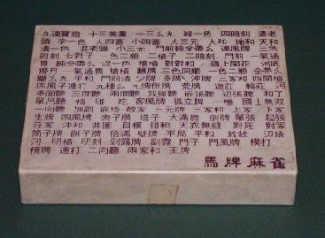
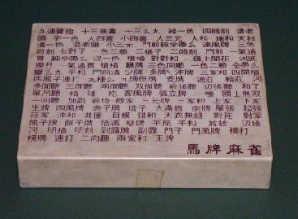

（３）韓国牌
1990年頃、韓国で買い求めた牌。筒子には、韓国の国旗である大極旗がモチーフされている。牌そのものは合成樹脂製。韓国麻雀では索子を使用しないので、索子は入っていない。しかし当時は、そんなことは知らなかった。そこで購入した この牌を帰国してから開封したとき、欠陥商品をつかまされたのかと思った。(^-^；韓国牌のケース。蓋にアガリ役がびっしり彫り込まれている。アガリ役の中に「清老頭」とか「三色同順」とあるが、絶対に出来ない(^-^)

Tile colection 珍奇牌。
（３）韓国牌
1990年頃、韓国で買い求めた牌。筒子には、韓国の国旗である大極旗がモチーフされている。牌そのものは合成樹脂製。韓国麻雀では索子を使用しないので、索子は入っていない。しかし当時は、そんなことは知らなかった。そこで購入した この牌を帰国してから開封したとき、欠陥商品をつかまされたのかと思った。(^-^；韓国牌のケース。蓋にアガリ役がびっしり彫り込まれている。アガリ役の中に「清老頭」とか「三色同順」とあるが、絶対に出来ない(^-^)
